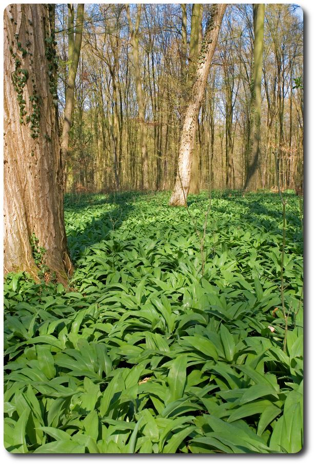

The Idea
The idea for organicsDE originated in 2010 during on of my visits to Munich, Germany.
It was then, grazing the cities renowned Viktualienmarkt, when I realized how much I missed my home town’s specialties.
One local product in particular is impossible to find anywhere in the United States, a Pesto made from the Ur-Kraut Baerlauch (Wild Garlic).
On a mission to bring Baerlauch and its unique flavor to the US, partnerships with local growers and manufactures were established.
OrganicsDE is committed to only sourcing products and ingredients that are 100% natural, either grown wild or cultivated adhering to Organic and Biodynamic farming standards.
OrganicsDE, preserving cultural traditions, from the field to your table.

Viktualienmarkt (A History)
The “Viktualienmarkt” is an inner city daily food market and square, located in the heart of Munich, Germany and renowned for its diversity and size.
Two centuries ago, when the food market of the city had grown too large for the central square “Marienplatz”, King Maximilian I issued a decree in 1807 to have it moved a few meters to the Southeast.
Charity buildings that had once belonged to the church were demolished to make way for the market square or "Marktplatz", which only much later came to be known as "Viktualienmarkt" (“Victuals” is the latin word for food).
Over the years, the market has evolved from a farmers' market to a Mecca for fresh food and delicatessen.
Its visitors enjoy a great variety of ingredients (local and exotic) that are not available anywhere else in the area.
Over 140 stalls and shops offering flowers and plants, fruits and vegetables, venison and fowl, eggs, butter, honey, fish, meat, sausages, herbs, spices, delicatessens, wine and tea are assembled on an area covering 22,000 square meters.
Biodynamic Farming
Biodynamic an impulse for deep social change, rooted in the practice of farming.
It calls for new thinking in every aspect of the food system: from how land is owned, to how farms are capitalized, to how food is produced, distributed and prepared.
Biodynamic Farming is a type of organic farming that incorporates an understanding of “dynamic” forces in nature not yet fully understood by science.
By working creatively with these subtle energies, farmers are able to significantly enhance the health of their farms and the quality and flavor of food.
Recognizing that the earth is a self-regulating, bio-diverse ecosystem, biodynamic farmers fashion their farms on the same principles in order to bring health to the land and their local communities.
In the early 1920s, a group of practicing farmers grew concerned with the decline in the health of soils, plants and animals.
They sought the advice of Rudolf Steiner (Austria born founder of Anthroposophy), who had spent all his life researching and investigating the subtle forces within nature.
From a series of lectures and conversations held at Koberwitz, Germany, in June 1924, there emerged the fundamental principles of biodynamic farming and gardening:
A unified approach to agriculture that relates the ecology of the farm-organism to that of the entire cosmos.
This approach has been evolving in many parts of the world ever since (Dr. Ehrenfried Pfeiffer, who worked with Dr. Steiner during the formative period, brought Biodynamic concepts to the United States in the 1930s).
What is Baerlauch?
Not to be confused with regular Garlic, Baerlauch (Allium ursinum) is also a vegetable, but a distant relative of the Leek family.
Also known as Wild Garlic, Ramsons or Bear’s Garlic, it is believed that this powerful plant was named after the bear.
Legend has it that bears, after awakening from hibernation, first feed on the aromatic Bear's Garlic leaves to clean out their digestive tract and regain their strength after the long winter.
Wild Garlic (Baerlauch) grows in deciduous woodlands with moist soils, preferring slightly acidic conditions.
They only flower once a year before the trees leaf in the spring, filling the air with their characteristic garlic-like scent.
The Wild Garlic leaves (with their precious vital substances) are edible and to be considered nature’s finest.
They can be used as salad, herb, boiled as a vegetable, in soup, or as an ingredient for pesto in lieu of basil.